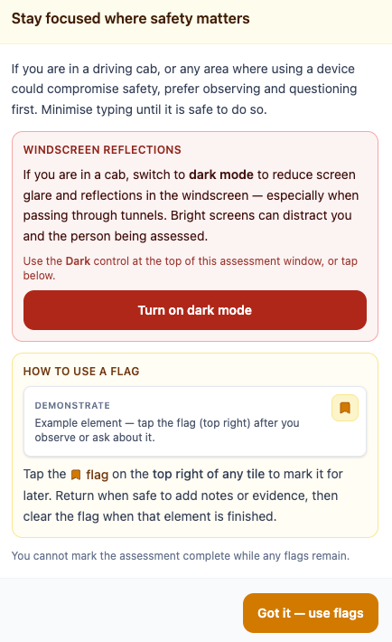

Assess in the cab without lighting up the windscreen
A bright tablet in a dark cab is a distraction — for the driver and for the assessor. Tunnel Mode is the assessor switching dark mode on and dimming the screen on mobile or tablet. It does not detect the tunnel automatically; the person in the cab decides when the glass is too bright.
Tunnel Mode
Dark and dimmable for the cab
A bright tablet against a dark windscreen is a distraction. When you enter a tunnel, the assessor switches assessing to dark mode and can dim the screen further on mobile or tablet — glare drops, and the focus stays on the railway.
- One-tap dark mode from the assessment header — switched by the assessor, not by the device.
- Dimmable brightness on mobile and tablet, adjusted by hand to suit the cab.
- Cab safety notice at the start of an event that offers dark mode in one tap.
Dark mode and brightness are set by the assessor on the tablet — the device does not switch automatically when the cab goes dark.
Built for the cab, not the office
When an assessment starts, Rail Intel reminds assessors that windscreen reflections matter — especially through tunnels — and offers dark mode in one tap. The Dark / Light control sits in the assessment header, so switching never means leaving the flow.
On mobile and tablet, a brightness slider sits under the header. Dim the screen from full daylight down to a soft cab-friendly level, and reset it when you are out of the tunnel. Both controls are manual: the tablet does not read the ambient light and switch on its own.
- One-tap dark mode from the assessment header, kept for the session.
- Dimmable brightness on mobile and tablet (40% to 135%), set by the assessor.
- Cab safety notice at the start of an assessable event, with a direct Turn on dark mode action.
- App-wide dark theme available from the user menu when you are not assessing.

Everything here is included
These capabilities are part of core Rail Intel, gated only by the permissions you assign. Optional modules extend them further.